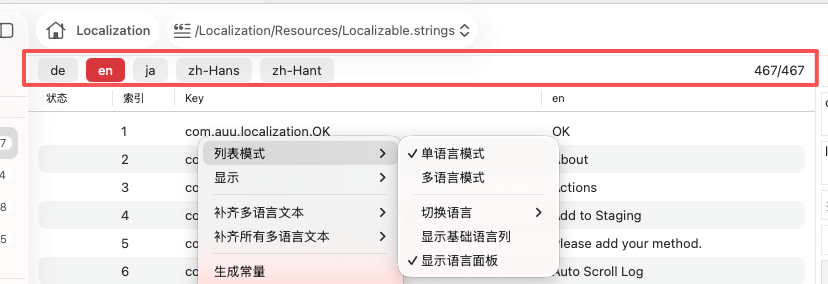

列表显示模式

功能概述
列表显示模式是 TransX
中用于控制多语言内容展示方式的核心功能，提供单语言模式和多语言模式两种视图切换方式。该功能充分考虑了不同工作场景下的需求差异：翻译人员需要专注于单一目标语言的深度工作，而项目管理人员和质量审核人员则需要全局对比多个语言的翻译状态。
通过灵活切换显示模式，用户可以在不同工作阶段获得最优的视觉体验和操作效率，同时系统会智能记忆用户的偏好设置，提升长期使用的便利性。
单语言模式
核心特性
单语言模式通过视图简化策略，将多语言表格精简为仅显示一种目标语言的翻译内容，可选配合基础语言列进行原文对照。此模式专为需要深度专注于单一语言翻译工作的场景设计，能够：
- 消除视觉干扰：隐藏无关语言列，让翻译人员专注于当前工作语言
- 提升界面效率：减少屏幕横向滚动，优化列宽利用
- 改善性能表现：在大型项目中显著降低渲染负担，提升响应速度
应用示例：
假设项目配置了
en（英语）、zh-Hans（简体中文）、zh-Hant（繁体中文）、ja（日语）、de（德语）、fr（法语）等多种语言，在单语言模式下选择日语后，列表仅显示日语翻译列（及可选的基础语言列），其他语言列将被隐藏。
语言切换面板
激活单语言模式后，内容区顶部会显示一个专门的语言切换工具面板：
面板功能：
- 语言列表：快速切换当前显示的目标语言，支持键盘导航
- 视觉指示器：清晰显示当前正在编辑的语言名称和图标
- 快捷访问：无需进入菜单栏即可完成语言切换操作
设计优势：
- 减少菜单层级导航的操作步骤
- 为频繁切换语言的工作流程提供便利
- 保持上下文可见性，用户随时知道当前工作的语言
相关操作选项
在单语言模式下，右键菜单中的以下三个选项变为可用状态，提供额外的控制能力：
1. 切换语言
功能描述：
在右键菜单中直接选择需要显示的目标语言，与顶部面板的语言切换功能等效。
操作价值：
- 提供多种操作入口，适应不同用户的使用习惯
- 对于习惯使用右键菜单的用户更加直观
- 在某些情况下（如工具面板被隐藏）仍可切换语言
适用用户：偏好右键菜单操作的用户，或需要在隐藏工具面板时切换语言的场景
2. 显示基础语言列
功能描述：
控制是否在单语言模式下同时显示项目设定的基础语言列，形成"基础语言 +
目标语言"的双列对照视图。
使用价值：
- 翻译参考：基础语言通常是开发人员或产品经理最熟悉的语言（如母语），作为翻译的源文本
- 语义对照：在翻译其他语言时可以同步查看基础语言的表达，确保翻译准确传达原意
- 质量保证：检查目标语言翻译是否偏离了基础语言的含义或语气
- 术语一致性：确认技术术语、产品名称等关键词的翻译是否与基础语言对应
应用场景：
- 日语翻译人员将中文（基础语言）翻译为日语时，需要对照中文原文
- 审核人员检查某语言翻译的准确性和完整性
- 翻译新手需要更多上下文理解来进行高质量翻译
视图效果：
开启显示基础语言列：
+---------------------------+-------------------------+
| Key | zh-Hans (基础) | ja (目标) |
+---------------------------+-------------------------+
| com.app.login.title | 登录 | ログイン |
| com.app.login.button | 立即登录 | 今すぐログイン |
+---------------------------+-------------------------+
关闭显示基础语言列：
+---------------------------+---------------+
| Key | ja (目标) |
+---------------------------+---------------+
| com.app.login.title | ログイン |
| com.app.login.button | 今すぐログイン |
+---------------------------+---------------+
3. 显示语言面板
功能描述：
控制内容区顶部语言切换工具面板的显示和隐藏状态。
使用价值：
- 空间优化：隐藏面板可以释放屏幕空间，增加内容列表的可视区域
- 专注工作：长时间专注于同一语言的翻译工作时，可以隐藏面板避免视觉干扰
- 灵活切换：需要频繁切换语言时，显示面板可以提供更高效的操作体验
切换方式：
- 通过右键菜单勾选或取消勾选"显示语言面板"菜单项
- 状态会被系统记忆，下次打开项目时保持
推荐使用策略：
- 显示面板：需要在多个语言间频繁切换时
- 隐藏面板：长时间专注于单一语言翻译，且屏幕空间有限时
多语言模式
核心特性
多语言模式是 TransX
的默认显示模式，提供项目中所有配置语言的全景视图。在此模式下，所有语言列会并排显示在表格中，形成完整的多语言对照矩阵，便于进行全局性的翻译管理和质量控制。
核心优势：
- 全局可见性：一览所有语言的翻译状态和内容
- 横向对比：快速对比同一条目在不同语言下的翻译差异
- 完整性检查：直观发现缺失翻译或翻译不一致的条目
- 统一编辑：在单一视图中即可编辑所有语言的内容
显示特点
1. 完整的语言展示：
- 所有项目配置的语言列都会显示在表格中
- 不会隐藏或省略任何语言
2. 灵活的视图导航：
- 如果语言数量较多超出屏幕宽度，支持横向滚动查看
- 可以调整列宽以优化显示效果
- Key 列可以固定显示，方便横向滚动时保持参考
3. 色彩编码和状态指示：
- 缺失翻译的单元格会以特殊颜色标识
- 已修改未保存的内容会有明显标记
- 支持根据翻译完整度进行视觉分组
适用场景
1. 全局校对审核
场景描述：质量保证人员需要对项目的所有语言翻译进行全面审核。
工作流程：
- 在多语言模式下浏览所有条目
- 横向对比各语言的翻译，检查一致性
- 快速识别缺失或异常的翻译
- 标记需要改进的条目
优势：
- 一次性查看所有语言，无需反复切换
- 容易发现翻译长度差异导致的 UI 问题
- 快速评估整体翻译质量和完成度
2. 一致性检查
场景描述：确保所有语言在术语使用、格式规范、标点符号等方面保持一致。
检查项目：
- 产品名称、品牌名称在所有语言中的统一性
- 日期、时间、数字格式的一致性
- 标点符号使用规范（如中文使用中文标点）
- 大小写风格的统一（如按钮文本是否首字母大写）
操作方式：
- 横向浏览每一行，对比所有语言的表达
- 使用搜索功能定位特定术语
- 批量修正不一致的内容
3. 批量编辑操作
场景描述：需要在多个语言间进行大规模的内容调整或格式统一。
应用示例：
- 统一将所有语言中的"确定"按钮改为"确认"
- 为所有缺失翻译的语言补齐内容
- 调整特定模块的文案风格
优势：
- 可以同时看到所有语言的编辑效果
- 减少模式切换带来的操作中断
- 便于保持多语言编辑的节奏一致性
4. 翻译进度评估
场景描述：项目经理或团队负责人需要了解各语言的翻译进度和工作量。
评估维度：
- 各语言的翻译完成度（已翻译 / 总条目数）
- 识别翻译滞后的语言
- 评估剩余工作量和资源分配
视觉辅助：
- 空白或占位符内容一目了然
- 可以快速统计缺失翻译的数量
- 便于生成进度报告和工作计划
模式切换
切换方法
通过以下方式切换显示模式：
- 在内容列表区域点击右键
- 在右键菜单中找到"列表模式"选项
- 选择"单语言模式"或"多语言模式"
- 列表视图会立即切换到选定的模式
状态保持
- TransX 会记住您的模式选择偏好
- 下次打开同一项目时会自动应用上次使用的模式
- 单语言模式下会记住最后选择的语言
使用场景详解
专业翻译工作流
场景描述：翻译公司的日语翻译人员专门负责将中文内容翻译为日语
推荐配置：
- 激活单语言模式
- 选择显示日语列
- 开启"显示基础语言列"（中文）
- 逐条对照中文原文进行日语翻译
优势：
- 界面简洁，专注于日语翻译
- 可以随时参考中文原文
- 减少其他语言的视觉干扰
本地化团队协作
场景描述：多名翻译人员同时负责不同语言的翻译，需要确保翻译质量和一致性
推荐配置：
- 翻译阶段：各翻译人员使用单语言模式，专注自己负责的语言
- 审核阶段：项目经理使用多语言模式，全面检查所有翻译
优势：
- 翻译时减少干扰，提高效率
- 审核时便于对比，发现问题
内容质量检查
场景描述：QA
人员需要检查所有语言的翻译完成度和准确性
推荐配置：
- 使用多语言模式查看全局
- 发现问题后切换到单语言模式进行详细检查和修正
- 利用筛选功能找出缺失翻译的条目
优势：
- 快速发现缺失或异常的翻译
- 灵活切换模式以适应不同检查需求
注意事项
- 列宽调整：单语言模式下，选定的语言列会自动调整为更宽的显示宽度，便于查看完整内容
- 性能优化：对于语言数量较多（10+
种语言）的大型项目，单语言模式可以显著提升渲染性能和操作响应速度
- 编辑限制：单语言模式下，只能编辑当前显示的语言和基础语言（如果显示），其他语言需要切换后才能编辑
- 导出影响：导出功能不受显示模式影响，始终可以导出所有语言的内容
- 搜索范围：在单语言模式下，建议将搜索范围限定在当前显示的语言中，以获得更精确的结果
- 基础语言：基础语言的设置在偏好设置中配置，需要根据项目实际情况选择合适的基础语言